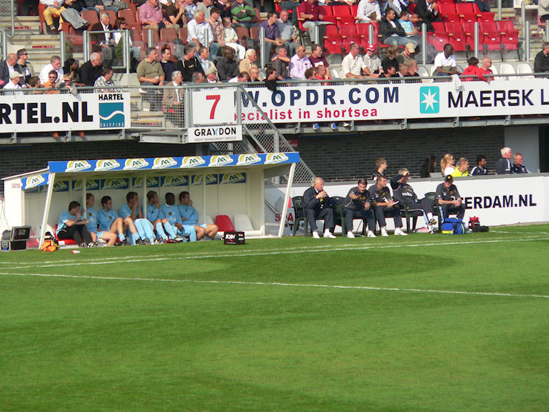

Sparta salam.
PC Hooftplein met op de achtergrond de lichtmasten van het stadion.
Weinig pliesies. Is ook niet nodig bij deze sfeervolle club.
+1 kudo voor inzet, -1 kudo voor resultaat.
Het gaat slecht met de uit-support. Nauwelijks zestig mensen van Roda in het
gastenvak.
Sfeeractie op de Denis Neville Tribune.
Matondo heeft zojuist een enorme doelkans verprutst. Vrijstaand voor de
doelman schoot hij naast.
Poepon schiet uit een vrijetrap-situatie op aangeven van Slot de bal achter
Castro: 1-0, (12').

Sparta was gedurende de eerste helft de betere ploeg. Roda ontbeerde
creativiteit en aanvalslust.
Wegereef trekt geel voor Toet (Sparta).

Atteveld zit, en blijft wellicht langer zitten dan menigeen denkt.

Meteen in de tweede helft scoort Bodor de gelijkmaker: 1-1, (46').
Het eerste uit-doelpunt in de competitie van Roda JC!
Even later ontsnapt Dissels die hard op doel schiet. Castro redt maar de
weggestompte bal komt voor de voeten van John die in kan
schieten: 2-1, (49').
In de tweede helft is Roda veel gevaarlijker. Meer initiatief, meer power.
Sparta blijft echter gevaarlijk uit de counter. Hier redt Castro na zulk een
situatie.
Twee minuten nadat Gommans is vervangen door Cissé scoort de Ivoriaan: 2-2,
(66').
SP-AR-TA-babe met oversized bril, oversized handtas en oversized rok...

Bedanktje aan het publiek.
En dan... WTF voetbal...
De Kasteelheertjes. Voor 150 eurootjes bent u erbij...
Afbieren in het supportershome van Sparta.
Twee notabelen die wachten op een lift.
Het is saai in de "business"
Sparta-liedje oefenen voor volgend seizoen!